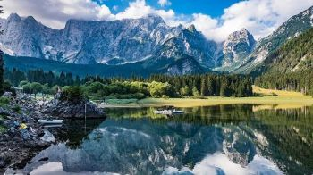
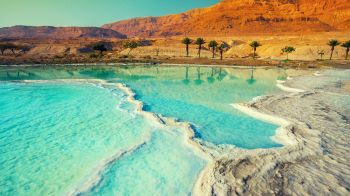
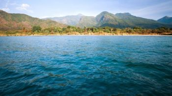
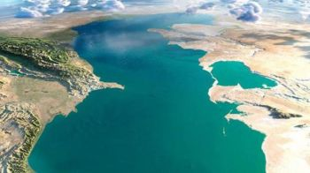

Terza Prova
Indica quale tra questi laghi è il più esteso del mondo!
inserisci il nome nella casella sottostante
|  |  |
|
Lago Fusine |
Mar Morto |
|  |  |
|
Lago Tanganica |
Mar Caspio |
"Presentazione del lago"
Capitali baltiche, avventure in Alaska, i porti storici del Mediterraneo, le isole paradisiache dei Caraibi, i fiordi del Nord Europa: le destinazioni in cui effettuare la crociera dei propri sogni sono davvero tante. Presto, però, aprirà le sue “porte” una destinazione crocieristica decisamente insolita: il mar Caspio. Un mare che è in realtà un bacino endoreico enorme (371 000 km² è la sua superficie), circondato dalle terre di cinque nazioni che – a livello turistico – non sono esattamente prese d’assalto: la Russia, il Kazakistan, il Turkmenistan, L’Azerbaijan e il nord dell’Iran.